비즈니스 포트폴리오부터 만들어요
영상은 광고 만들기보다 계정 정리부터 시작해요. 계정이 잘못 세팅되어 있으면 AI(Artificial Intelligence)를 붙여도 나쁜 결정을 더 빨리 내릴 뿐이라는 이유예요. 발표자 Davie Fogarty는 자기 쇼핑몰 브랜드로 페이스북 광고에 2억 달러 넘게 썼다고 소개하고, 데모가 아닌 실제 광고 계정 화면으로 보여 줘요.
입구는 business.facebook.com이에요
주소창에 business.facebook.com을 치거나 'Facebook Business Manager'를 검색해 Meta 공식 결과로 들어가요. 계정 상태에 따라 Business Suite, Business Manager, 비즈니스 설정, Ads Manager 중 어디로든 떨어질 수 있는데 모두 같은 곳이에요. 페이지에서 게시물을 '홍보하기'로 띄우거나 Ads Manager만 쓰는 것보다 이 비즈니스 도구를 거치는 게 훨씬 많은 걸 통제할 수 있다고 해요.
로그인은 본인 실명 페이스북 계정으로 해요. 가짜 프로필이나 이름이 틀린 옛 계정을 쓰면 나중에 Meta가 본인 확인을 요구할 때 정보가 맞지 않아요. 아래 화면처럼 비즈니스 포트폴리오를 만들 때는 이름, 이메일, 누가 접근할지를 확인하는 창이 떠요. 가운데 'Who will have access'에 본인 이름과 'Full control'이 보여요.
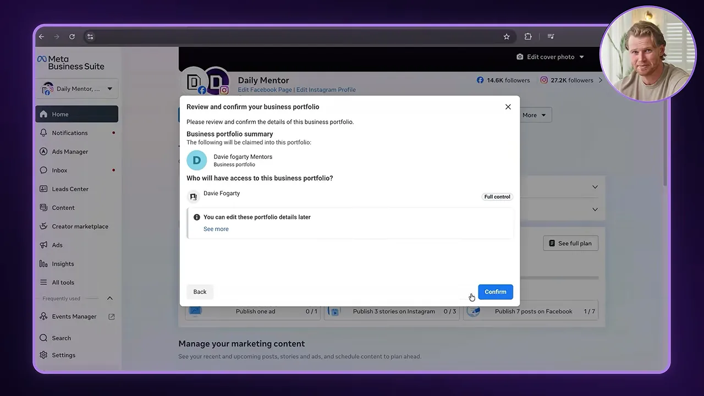
이메일을 대충 넣으면 안 되는 이유가 있어요. 경고, 결제 문제, 인증 요청이 모두 이 메일로 오는데, 늦게 보면 광고 계정이 정지될 수 있거든요. 이름도 'test'처럼 두지 말고 실제 브랜드 이름과 맞춰요.
자산을 순서대로 연결해요
포트폴리오가 생기면 페이지, 인스타그램, 광고 계정을 차례로 붙여요. 페이지가 먼저인 이유는 광고가 어딘가에서 '나와야' 하기 때문이에요. 사람들은 광고 위에 붙은 페이지 이름과 프로필 사진을 봐요. 아래는 예시로 쓴 The Oodie 페이지예요. 동그란 로고, 커버 사진, 소개 글이 다 채워져 있어요.
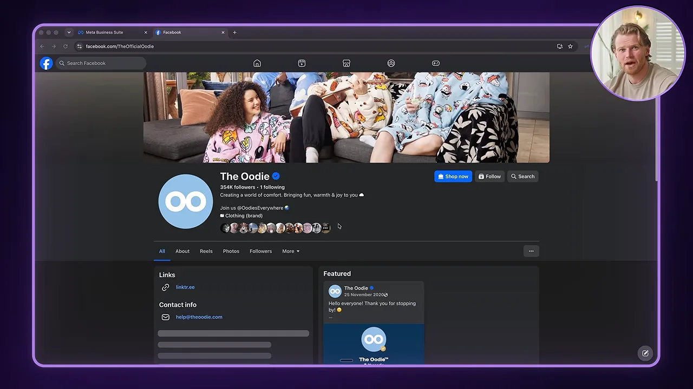
| 연결할 것 | 영상이 강조한 점 |
|---|---|
| 페이스북 페이지 | 없으면 새로 만들어요. 광고에 이 이름과 사진이 그대로 나가요 |
| 인스타그램 계정 | 없어도 진행은 되지만, 광고가 인스타그램에 많이 나가고 팔로워도 일찍 모이니 연결해요 |
| 광고 계정 | 나중에 알아볼 이름을 붙여요(The Oodie Australia, The Oodie US(United States)처럼). 시간대와 통화는 나중에 바꾸기 어렵거나 불가능해요 |
| 결제 수단 | 사업에 써도 되는 카드를 정확히 넣어요. 실패한 결제를 계속 다시 시도하면 계정이 정지될 수 있어요 |
| 사람(사용자) | 필요한 만큼만 권한을 줘요. 결과만 보는 사람에게 관리자 권한은 필요 없어요 |
결제 화면은 아래처럼 카드 정보를 넣는 창이 떠요. 발표자는 여기서 서두르지 말라고 거듭 말해요.
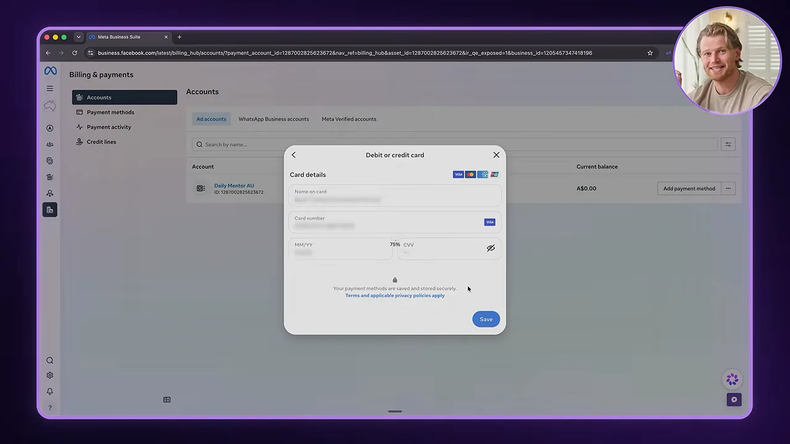
마지막으로 본인과 관리자 권한을 가진 모든 사람에게 2단계 인증을 켜요. 누가 광고 계정에 들어오면 돈을 아주 빨리 써 버릴 수 있고, 그 뒤 계정 정지까지 이어지면 사업 내내 골치가 아파요. 이미 포트폴리오가 있는 사람도 계정 선택기로 맞는 비즈니스에 들어가 있는지, 페이지와 인스타그램이 제대로 붙어 있는지 이 순서대로 한 번 점검해 보라고 해요.
광고를 켜기 전에 추적부터
계정이 준비되면 광고 계정에서 Ads Manager를 열고, 모든 도구 메뉴에서 이벤트 관리자로 가요. 여기서 Meta가 내 웹사이트 안에서 일어나는 일을 볼 수 있는지 확인해요. 예전 영상에서는 '페이스북 픽셀'이라고 불렀고 지금 화면에는 데이터 세트, 데이터 소스, 웹 이벤트처럼 보이는데, 이름은 크게 신경 쓰지 않아도 된다고 해요.
핵심은 광고를 누르고 들어온 사람의 행동 네 가지가 잡히는지예요. 영상은 아래처럼 위에서 아래로 상품 조회, 장바구니 담기, 결제 시작, 구매를 세워 보여 줘요.
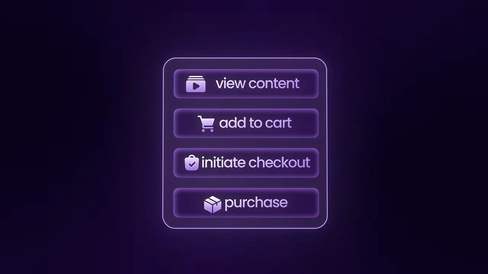
아무것도 없으면 '새 데이터 소스 연결'에서 웹을 고르고 데이터 세트(픽셀)를 만들어요. The Oodie 같은 Shopify 스토어라면 코드를 여기저기 붙이지 말고 Shopify 쪽에서 연결해요. Shopify 관리자에서 Facebook & Instagram 채널을 열면 아래처럼 Facebook 프로필, 비즈니스 포트폴리오, 데이터 공유, 약관 순서로 칸이 나와요.
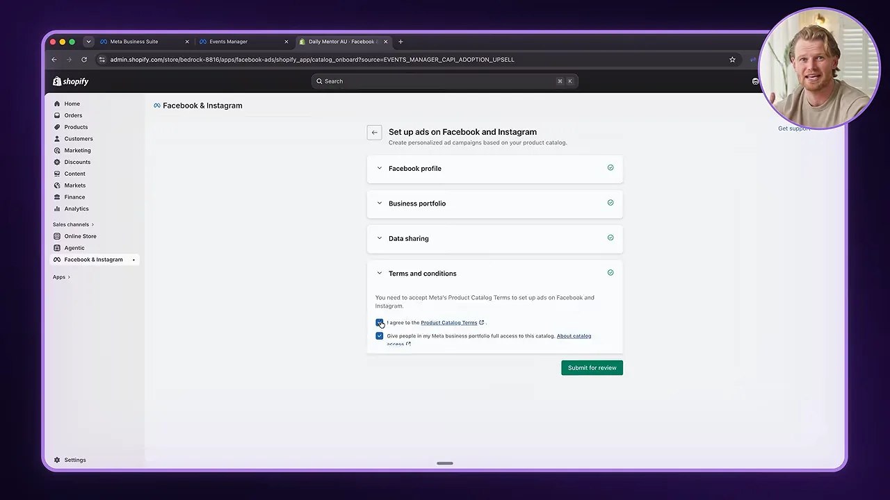
연결한 뒤 이벤트 관리자로 돌아와 이벤트가 들어오는지 봐요. 몇 분 걸릴 수 있어요. 그래도 안 보이면 테스트 이벤트 도구에 사이트 주소를 넣고, 직접 사이트를 열어 상품을 보고 장바구니에 담은 다음 기록됐는지 확인해요. 사흘 동안 광고비를 쓰고 나서야 구매가 한 번도 안 잡혔다는 걸 알게 되는 일을 막으려는 거예요. 어떤 픽셀이 어디서 작동하는지 보려면 무료 크롬 확장 프로그램 Meta Pixel Helper를 쓰라고 해요.
캠페인: 목표, 이름, 예산
Ads Manager에 들어가면 위에 캠페인, 광고 세트, 광고 세 탭이 보여요. 발표자는 이 세 단계만 이해하면 플랫폼이 훨씬 덜 무섭다고 해요. 아래 화면에서 Campaigns 탭이 선택돼 있고 옆에 Ad sets, Ads가 나란히 있어요. 왼쪽 위 초록색 Create 버튼으로 시작해요.
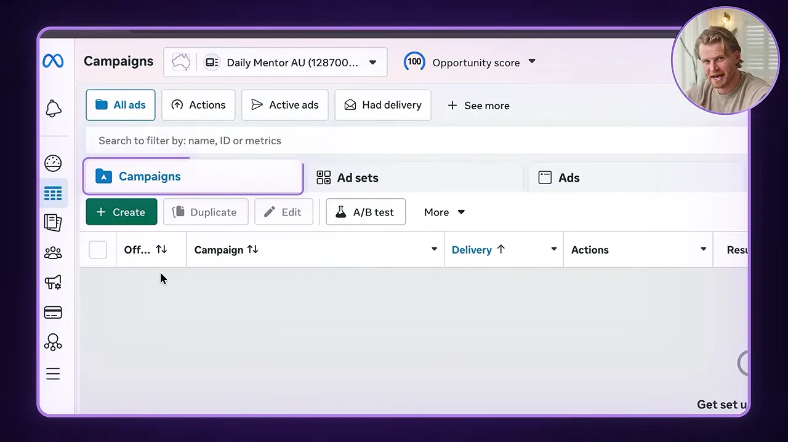
영상이 각 단계에서 정하는 것을 한 장으로 모으면 이래요. 위에서 정한 것이 아래로 그대로 내려가요.
목표는 '판매'
Create를 누르면 캠페인 목표 목록이 떠요. 아래 화면에서 Awareness, Traffic, Engagement, Leads, App promotion, Sales 중 맨 아래 Sales가 선택돼 있어요. 초보자는 트래픽이 안전해 보여서, 참여가 싸서, 동영상 조회가 많이 보여서 그쪽을 고르다 곤란해진다고 해요. 쇼핑몰이라면 결국 원하는 건 구매니까 '판매'를 골라요. 리드를 모으는 사업도 값싼 리드보다 실제 매출로 이어지는 쪽을 찾으라고 해요.
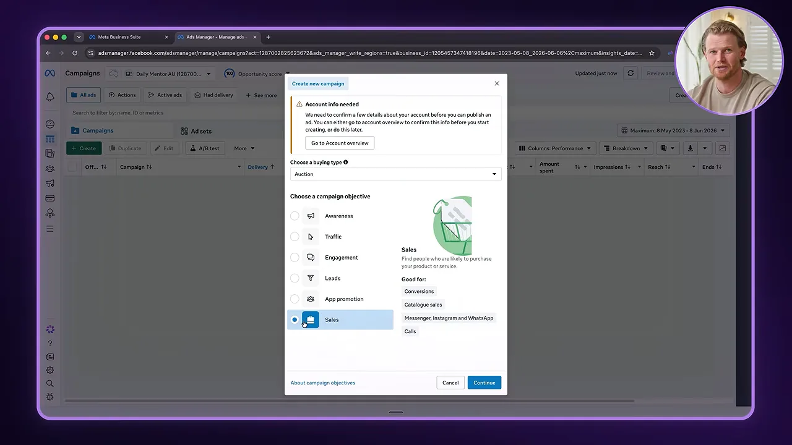
그 아래 특별 광고 카테고리는 신용, 고용, 주택, 정치, 사회 이슈 광고에만 해당해요. 대부분은 해당이 없으니 꺼 둔 채 넘어가요.
이름은 미래의 나를 위해
캠페인 이름을 '캠페인 1'이나 'test'로 두지 말라고 해요. 고객은 못 보는 이름이라 순전히 정리용이에요. 아래 화면의 예시는 [DM] SALES | PRODUCT 1 | AUS 08.06.26이에요. 목표, 상품, 국가, 날짜가 차례로 들어가 있어요.
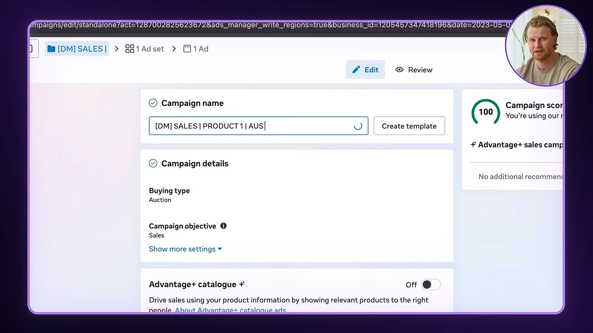
Advantage+ 같은 자동 옵션이 보여도 처음엔 수동 설정을 골라요. Advantage+가 나쁘다는 게 아니라, 구조를 먼저 이해해야 자동 옵션도 이해된다는 뜻이에요. A/B 테스트 토글은 끄고, 카탈로그 옵션도 꺼요. 첫 캠페인은 평범한 소재로 돌리는 넓은 판매 캠페인이기 때문이에요.
예산은 캠페인 단위로
예산은 Meta에게 '최선의 결과를 위해 이만큼까지 써도 된다'고 알려 주는 숫자예요. 아래 화면에서 Budget strategy는 Campaign budget(Advantage+ 캠페인 예산)이 선택돼 있고, 일일 예산 칸에 25.00 AUD(Australian Dollar)가 들어가 있어요. 이렇게 캠페인에 돈을 넣어 두면 Meta가 광고 세트와 광고 사이에서 어디에 쓸지 정해요.
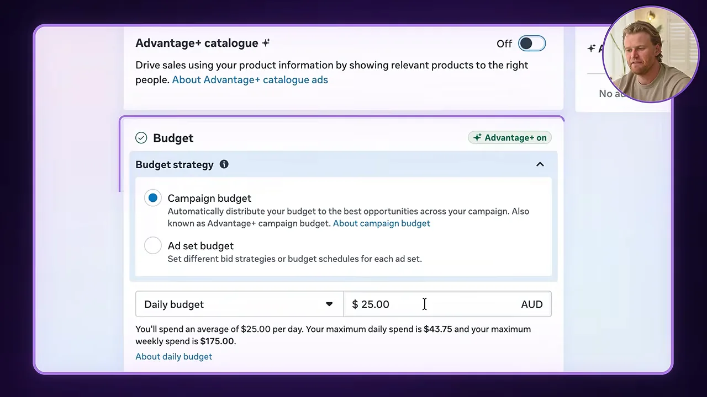
얼마로 시작할지는 상품 가격, 마진, 감당할 수 있는 금액에 달려 있어요. 100달러짜리 상품에 하루 3달러를 쓰면 뭘 배우기까지 너무 오래 걸려요. 반대로 검증 안 된 소재로 새 캠페인에 하루 500달러를 넣으면 돈이 너무 빨리 타요. 잘 모르겠으면 일단 하루 10달러, 100달러 상품으로 새 소재를 시험한다면 사업에 따라 하루 20~50달러가 영상이 든 출발점이에요.
첫 광고는 '시험'으로 생각하래요. 뭔가 배울 만큼은 쓰되, 하루 망쳤다고 사업을 시작할 힘이 꺾일 만큼은 쓰지 말라는 거예요. 기준은 CPA(Cost Per Acquisition)예요. 이 상품을 팔 때 고객 한 명을 데려오는 데 얼마까지 낼 수 있는지가 출발점이에요. 비싼 상품일수록 CPA가 높아요. 500달러짜리는 40달러짜리보다 사는 사람이 적으니까요.
광고 세트: 전환과 넓은 타깃
전환: 어디서, 무엇을
광고 세트로 내려오면 먼저 전환 위치를 확인해요. 사람을 웹사이트로 보내서 사게 할 거라 '웹사이트'를 골라요. 아래 화면처럼 드롭다운에 여러 선택지가 있지만, 바꾸는 경우는 Meta 안의 리드 양식이나 인스타그램 메시지처럼 행동이 다른 곳에서 일어날 때뿐이라 아주 드물어요. 웹사이트가 여러 개라면 맞는 곳이 골라졌는지만 봐요.
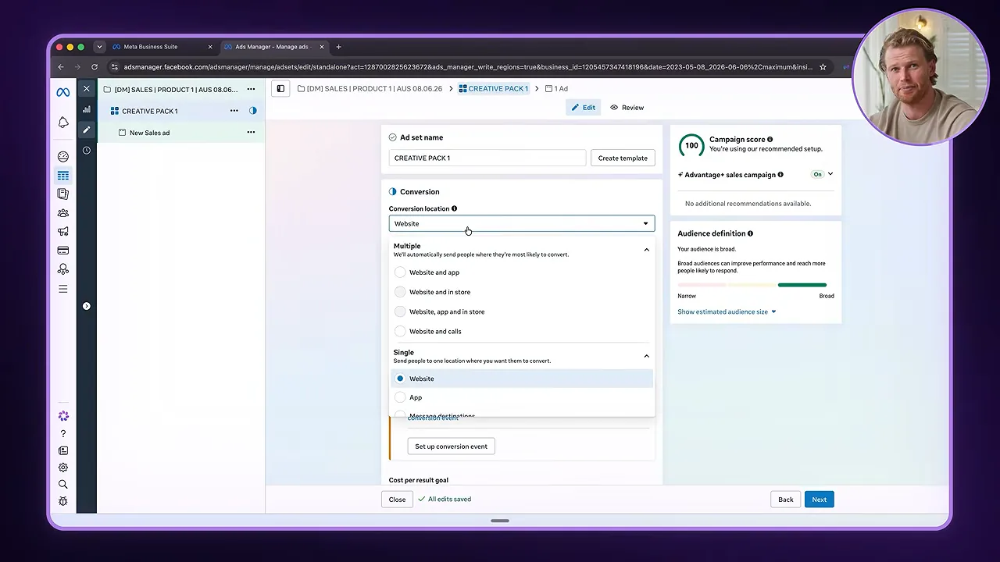
그 아래 데이터 세트 칸에서 앞 섹션에서 확인한 픽셀을 고르고, 전환 이벤트는 '구매'로 둬요. 아래 화면에서 Dataset은 'Daily Mentor AU Pixel', Conversion event는 'Purchase'예요. 그 밑의 노란 경고는 이 데이터 세트에 아직 전환 이벤트가 없다는 뜻이에요.
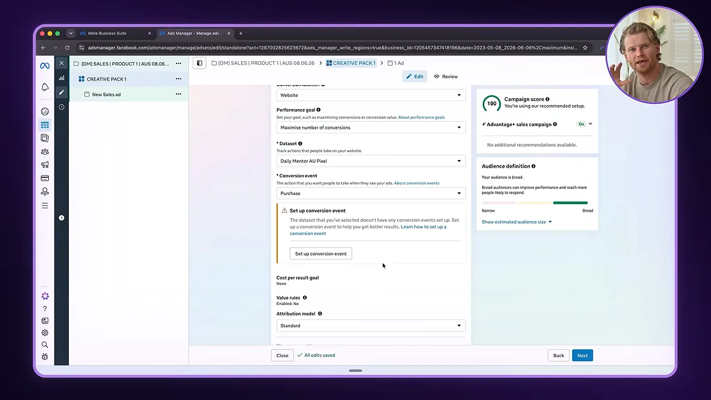
그렇다고 경고를 무턱대고 무시하라는 건 아니에요. 페이지 조회조차 안 잡힌다면 추적부터 다시 봐야 해요. 지루한 추적 단계를 먼저 한 이유가 여기서 드러나요.
타깃은 넓게, 국가만 정확히
타깃 설정은 업계가 가장 많이 바뀐 부분이라고 해요. 예전엔 반려동물 상품이면 관심사에 '반려동물'을 넣고 유사 타깃과 리타기팅 깔때기를 복잡하게 쌓았어요. 지금은 초급·중급 계정 대부분에서 브로드 타기팅이 예상보다 잘 돼요. Meta가 소재, 픽셀, 전환 데이터, 플랫폼 안 행동을 보고 살 사람을 찾기 때문이에요.
정할 건 위치예요. 실제로 팔고 배송할 수 있는 국가를 넣고, 지역 서비스라면 나라 전체가 아니라 실제 서비스 지역만 넣어요. 나이와 성별은 진짜 이유가 있을 때만 좁혀요. 아래 화면은 나이 18~65+, 성별 전체, 상세 타기팅 '모든 인구 통계·관심사·행동'으로 열어 둔 상태예요.
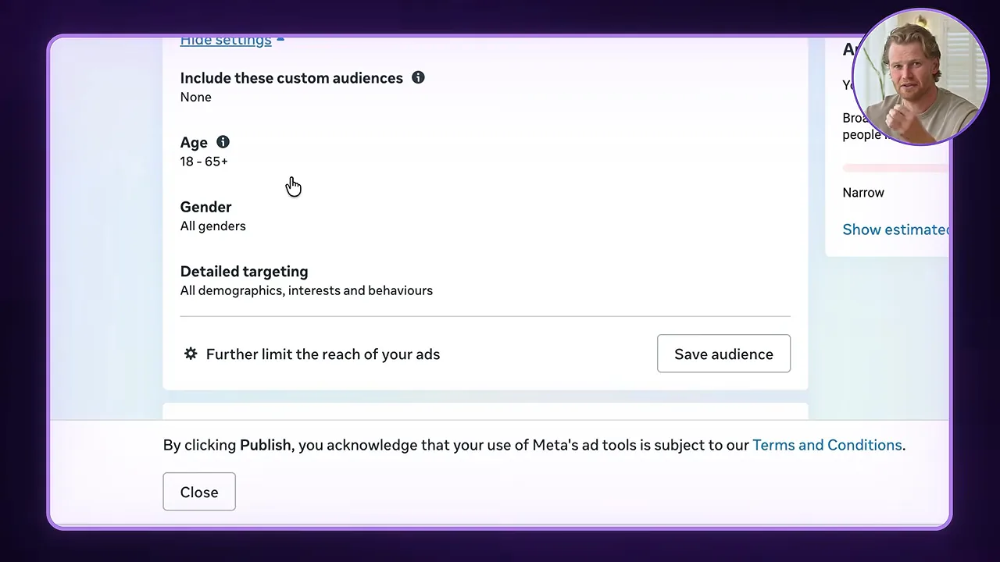
대신 일은 소재가 해요. 예를 들어 넷플릭스 보는 사람을 노리고 싶으면 관심사에 넷플릭스를 넣지 말고, 소재 안에서 넷플릭스를 말하래요. Meta는 누가 클릭하고, 장바구니에 담고, 사고, 무시하는지 보면서 내가 직접 고를 수 있는 것보다 더 많은 사람을 찾아요.
익숙해지면 제외 설정을 쓸 수 있어요. 이전 구매자로 맞춤 타깃을 만들어 신규 고객을 찾는 캠페인에서 빼는 식이에요. 하지만 처음엔 넓게 시작해 캠페인을 굴러가게 만든 다음이에요.
노출 위치는 자동으로
노출 위치는 Meta가 권하는 Advantage+ 노출 위치(자동)가 초보자에게 좋은 출발점이에요. 단, 소재가 여러 비율에 맞아야 해요. 한 비율에서만 예쁜 영상을 아무 데나 보여 주면 어떤 자리에서는 어색하게 나와요. Meta가 금방 알아채고 그 자리에 덜 보여 주긴 하지만 가끔 튀어나와요. 해법인 '세이프 존'은 다음 섹션에서 나와요.
광고: 소재가 거의 전부예요
발표자는 이 단계를 초보자가 가장 가볍게 여기면서도 실제로는 가장 중요한 부분이라고 해요. 캠페인 설정, 픽셀, 예산이 완벽해도 광고가 지루하거나, 헷갈리거나, 느리거나, 피드의 다른 광고와 똑같아 보이면 쓴 돈에서 좋은 일은 안 일어나요.
아이덴티티부터 확인해요
광고 단계의 첫 칸은 아이덴티티, 즉 고객이 보게 될 페이스북 페이지와 인스타그램 계정이에요. 아래 화면 가운데 Identity 아래 Facebook Page와 Instagram profile 칸이 있어요. 여기 엉뚱한 페이지가 뜨면 멈추고 비즈니스 설정으로 돌아가요. 광고는 고객이 알아볼 브랜드에서 나와야 해요.
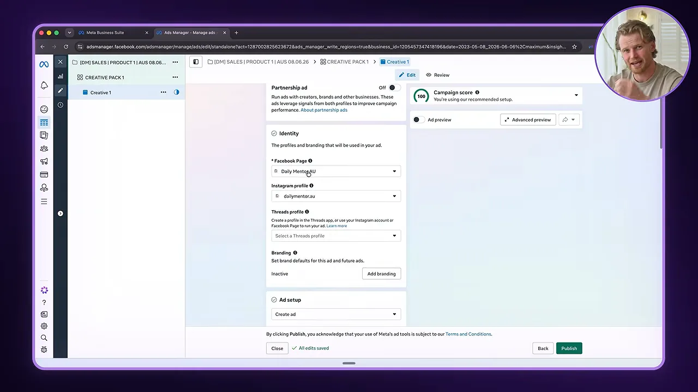
각도가 다른 소재 3~5개
업로드 전에 영상은 잠깐 멈춰요. 페이스북 광고는 예쁜 영상을 올리는 일이 아니라는 거예요. 소재에는 할 일이 있어요. 맞는 사람에게 맞는 상품을 보여 주고, 제안이 와닿게 하고, 다음 행동을 분명히 하는 거예요.
그래서 첫 광고 전에 크리에이티브 앵글이 다른 소재를 최소 3~5개 준비하래요. 헤드라인만 바꾸거나 필터만 씌운 복사본이 아니라 접근 자체가 달라야 해요.
| 영상이 든 앵글 | 무엇을 보여 주나요 |
|---|---|
| 문제-해결형 | 고객의 문제를 짚고 상품이 어떻게 해결하는지 |
| 창업자 설명형 | 만든 사람이 직접 상품을 설명 |
| UGC(User-Generated Content) 후기형 | 실제 사용자가 찍은 듯한 후기 |
| 시연형 | 상품이 작동하는 모습을 그대로 보여 주기 |
형식도 섞어요. 예를 들어 영상 3개와 이미지 3개요. 초기에는 소재가 너무 많을 수 없고, 처음부터 10개, 20개, 30개로 시작하는 브랜드도 봤다고 해요.
아이디어가 없으면 무료인 Meta 광고 라이브러리에 가서 The Oodie 같은 브랜드나 좋아하는 브랜드의 광고를 노출 많은 순으로 보래요. 아래 화면이 The Oodie를 검색한 결과예요. 카드마다 집행 중인 광고가 하나씩 보여요.
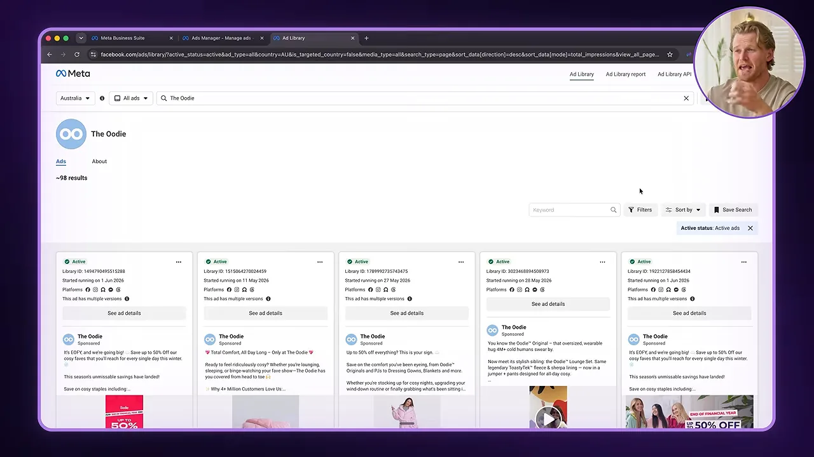
9:16으로 찍고 4:5 안에 담아요
소재를 올리면 오른쪽 미리보기에서 노출 위치별 모습을 볼 수 있어요. 이 단계를 건너뛰지 말고 위치를 하나씩 넘겨 보래요. 아래 화면은 비율 안내용 시험 이미지를 올린 상태예요. 맨 위 '9:16 SAFE ZONE', 그 안쪽 '4:5 SAFE ZONE', 가운데 '1:1 SAFE ZONE' 띠가 겹쳐 있어요. 왼쪽 피드에서는 4:5 부분만, 오른쪽에서는 다른 비율로 잘려 보여요.
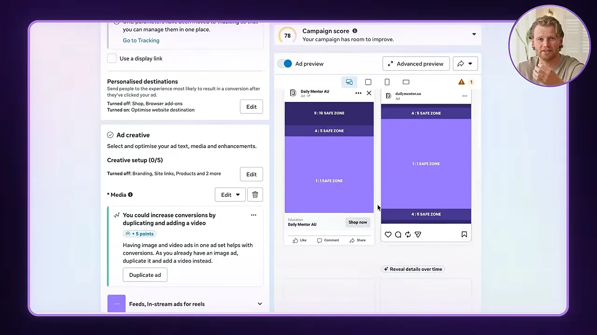
규칙은 이래요. 이미지 광고까지 모두 인스타그램 스토리 크기인 9:16 세로로 만들되, 문구나 버튼 같은 중요한 요소는 인스타그램 피드 크기인 4:5 세이프 존 안에 둬요. 그러면 스토리에서는 화면 끝까지 꽉 차고, 피드에서는 문구가 반쯤 잘리는 일이 없어요. 몇몇 자리에서는 이 방법이 안 맞을 수 있지만 성장에 결정적인 자리는 아니라고 해요.
이미 4:5로만 찍은 소재가 있다면 편집 프로그램에서 가장자리를 흐리게 늘리거나 단색 배경을 깔아 9:16으로 만들어요. 스토리는 꼭 돌리고 싶은 좋은 자리라서요.
자동 개선 기능은 꺼요
이 근처에 크리에이티브 개선, Advantage+ 크리에이티브 같은 자동 기능이 보여요. 아래 화면에서도 'AI로 만든 이미지를 추가하면 클릭률이 10% 오를 수 있다'는 제안이 떠 있어요. 발표자는 처음엔 모두 끄라고 해요.
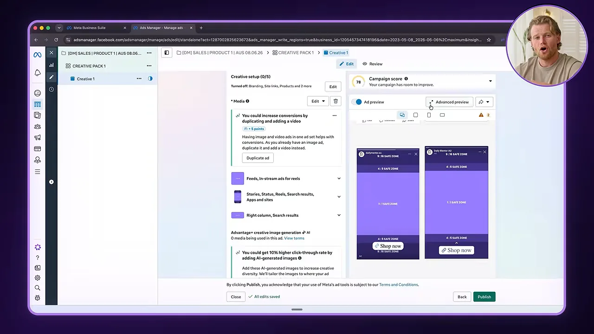
도움이 될 때도 있겠지만, 처음에는 변수를 직접 쥐고 있어야 '내 소재가 먹혔는지'를 알 수 있다는 게 이유예요.
문구, 링크, 그리고 게시
기본 문구는 소재에 맞춰요
기본 문구는 길 필요가 없어요. 소재와 최대한 맞고 제안이 분명하면 돼요. 영상이 권하는 구조는 세 단계예요.
- 문제나 바람을 짚어요
- 상품이나 제안을 설명해요
- 지금 살 이유를 줘요 — 예: 2개 사면 10% 할인
막히면 ChatGPT나 Claude 같은 AI에 상품과 광고 모습을 설명하고, 관심을 끌고 판매로 이어지는 기본 문구를 다섯 가지 써 달라고 하래요. Meta의 AI도 문구를 여러 개 추천하는데, 다섯 개를 다 쓰지 말고 더 마음에 드는 하나만 골라 쓰라고 해요.
조심할 점도 있어요. 고객의 민감한 정보를 아는 척하며 개인 특성을 콕 집는 문구, 오해를 부르는 주장은 쓸 수 없어요.
헤드라인, 버튼, URL
헤드라인은 꽤 중요하고 설명은 덜 중요해요. 그다음 행동 유도 버튼을 고르고 웹사이트 URL(Uniform Resource Locator)을 붙여요. URL은 꼭 직접 눌러 보래요. 페이지가 열리는지, 모바일에서 잘 뜨는지, 페이지의 제안이 광고와 같은지요. 당연해 보여도 엉뚱한 사이트로 실제 돈을 보낸 사람을 여럿 봤다고 해요. URL 아래 파라미터 칸은 UTM(Urchin Tracking Module)을 쓸 때만 필요하고, 초보라면 사이트가 맞는지와 픽셀이 작동하는지만 보면 돼요.
복제해서 소재를 채우고, 꺼 둔 채 게시해요
한 광고를 게시하면 '복제'로 다음 광고를 만들어요. 같은 광고 세트에 두고 소재만 새 앵글로 바꿔요. 실수로 같은 광고를 두 번 올리지 않게 조심해요. 문구는 그대로 둬도 되고, 소재가 꽤 다르면 바꿔도 돼요. 문구는 소재보다 훨씬 덜 중요해요. 이걸 준비한 3~5개 소재만큼 반복해요.
모두 넣었으면 설정을 한 번 더 훑고 게시해요. Meta가 검토를 시작하는데 금방 끝날 때도, 꽤 걸릴 때도 있어요. 발표자의 팁은 검토 동안 캠페인을 꺼 두는 거예요. 아래 화면처럼 캠페인 토글이 꺼져 있고 Delivery가 Off예요. 오른쪽 Budget 칸에는 하루 100달러가 보여요.
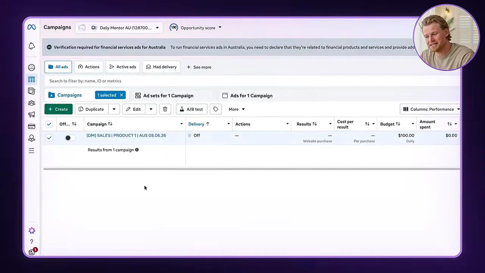
켜기 전 마지막 확인은 예산이에요. 0을 하나 더 붙여 하루 500달러, 5,000달러가 나가지 않게요.
거절되면 고쳐서 다시
광고가 거절돼도 당황하지 말되, 같은 걸 계속 다시 올리지 말래요. 이유를 읽고 실제 문제를 고쳐요. 정말 잘못된 판정이라고 생각하면 정식 재검토를 요청해요. 거절 화면을 캡처해 광고와 함께 AI에 주고 고쳐 달라고 해도 돼요. 이상한 철자로 정책을 피하거나, 광고 하나 거절됐다고 새 광고 계정을 만드는 건 안 돼요. 그러다 평생 따라다닐 큰 문제가 생긴다고 해요.
첫 24~72시간은 깔때기로 진단해요
캠페인이 돈을 쓰기 시작하면 계정이 무슨 말을 하는지 읽을 줄 알아야 해요. 처음 하루 이틀의 목표는 당황하지 않는 거예요. 확인할 건 세 가지예요. 광고가 돌아가도 되는 상태인지(승인·활성), 실제로 돈이 나가는지(지출·노출·클릭), 데이터가 제대로 돌아오는지(맞는 랜딩 페이지, 이벤트 기록)요.
지출이 아예 없다면 보통 소재 문제가 아니에요. 결제, 타깃 크기, 계정 제한 같은 전달 문제일 가능성이 커요.
열을 직접 맞춰요
기본 열로는 부족하니 '열 맞춤 설정'을 열어 깔때기 전체가 보이게 바꿔요. 아래 화면이 Customise columns 창이에요. 왼쪽에서 지표를 찾아 체크하면 오른쪽 목록에 쌓여요.
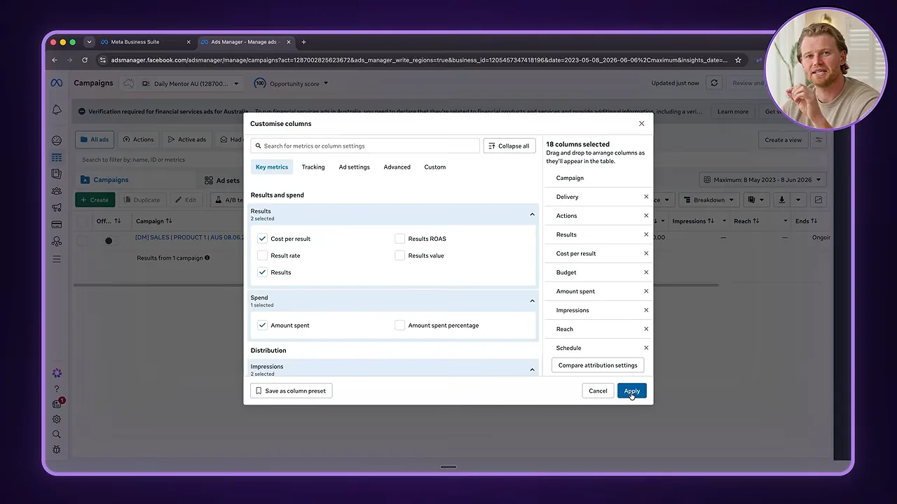
영상이 넣으라는 열은 이래요. 전달 상태, 지출 금액, 노출, 도달, CPM(Cost Per Mille), 아웃바운드 클릭, 아웃바운드 CTR(Click-Through Rate), 아웃바운드 클릭당 비용, 랜딩 페이지 조회, 장바구니 담기, 구매, 구매당 비용, 구매 전환값, ROAS예요. 더 하고 싶으면 전환율과 평균 주문 금액 같은 맞춤 지표도 만들 수 있어요. 저장해 두면 계정에 들어가 지출 순으로 정렬하는 것만으로 돈을 가장 많이 쓰는 소재와 그 결과가 한눈에 보여요.
깔때기를 위에서 아래로 따라가요
72시간쯤 지나면 어디서 사람이 빠져나가는지 봐요. 영상은 아래처럼 빨간 상자 세 개로 '이 단계는 있는데 다음 단계가 없다'와 그때 의심할 곳을 짝지어 보여 줘요.
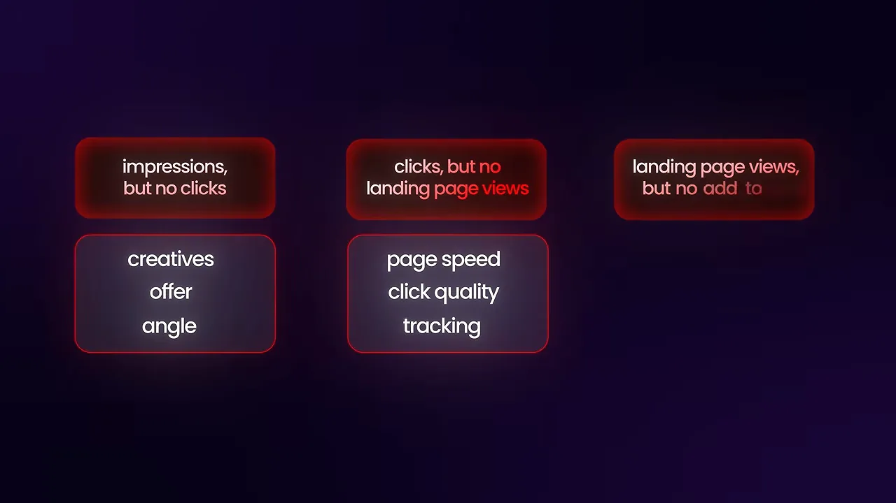
그래픽에는 세 칸만 나오지만, 말로는 지출 단계와 구매 단계까지 짚어요. 그 전체를 한 줄로 그리면 이래요.
구매가 들어오기 시작하면 질문이 바뀌어요. 이게 실제로 수익이 나는지, 이 상품을 키울 수 있는지예요. 그건 다음 섹션의 ROAS로 판단해요.
ROAS로 매일 예산을 정해요
너무 일찍 고치지 마세요
발표자가 가장 자주 본다는 함정은 너무 일찍 손대는 거예요. 10달러 쓰고 판매가 없으니 타깃을 바꾸고, 10달러 더 쓰고 소재를 바꾸고, 예산을 바꾸고, 목표까지 바꿔요. 이렇게 많이 바꾸면 무엇 때문에 결과가 달라졌는지 알 수 없어요. 지금 해도 되는 변화는 소재를 몇 개 더 넣는 것 정도예요. 앞에서처럼 복제해서 새 소재를 직접 올리면 돼요. 학습이 조금 초기화될 수 있지만, 초보 단계에선 소재가 많을수록 낫다고 해요.
ROAS를 읽는 법
ROAS는 1달러를 쓰면 몇 달러가 돌아오는지예요. 아래는 지출이 있는 실제 계정 화면이에요. 두 번째 줄은 구매 전환값 521.62달러에 ROAS 4.35, 구매당 비용 17.14달러예요. 세 번째 줄은 129.10달러에 ROAS 1.58, 구매당 비용 40.84달러고, 첫째와 넷째 줄은 아직 구매가 없어요.
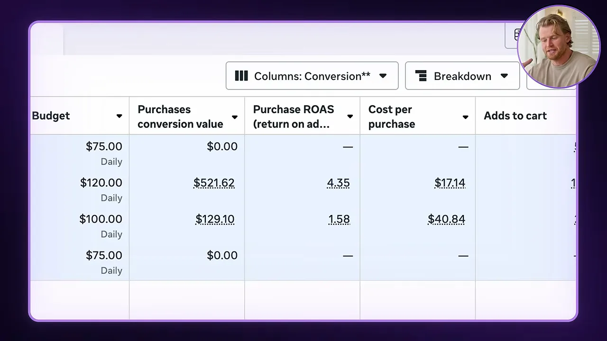
내 목표 ROAS는 계산기로 구해요
목표 ROAS를 모르겠으면 Google Sheets의 Gemini 확장에 수익 계산기를 만들어 달라고 하래요. 아래 화면처럼 넣을 항목을 줄줄이 적어요. 판매가, 평균 주문 금액, 개당 원가, 입고 운송비, 포장, 피킹·포장 작업비, 택배비, 결제 수수료, 할인, 그 밖의 변동비예요.
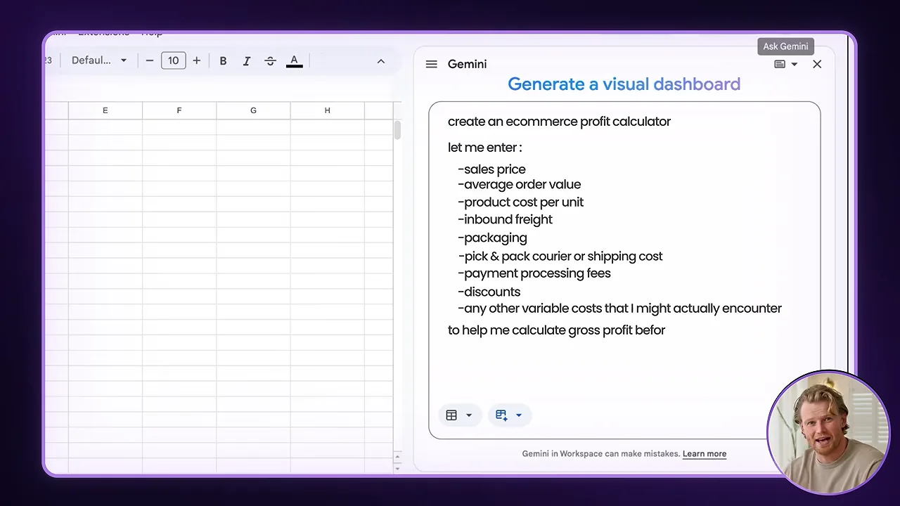
매일 아침 하는 일
그러면 페이스북 광고 운영은 이만큼 단순해진다고 해요. 아침에 ROAS 열을 보고 목표와 비교해요.
flowchart LR A["아침에 ROAS 확인
(최근 3일)"] --> B{"목표 ROAS와 비교"} B -- "목표보다 낮음" --> C["지출을 줄여요"] B -- "목표를 크게 넘김
(목표 3인데 10)" --> D["예산을 10~20% 올려요"] D --> E["며칠 안정되기를 기다려
여전히 수익인지 확인"] C --> F["새 소재를 계속 넣어요"] E --> F
광고 하나하나는 목표 CPA를 기준으로 봐요. 영상의 예는 목표 구매당 비용 50달러에 실제 32달러가 나오는 계정이에요. 여기서 150달러를 쓰고도 구매가 0건인 광고는 문제가 있을 가능성이 커요. 15달러만 쓰고 구매가 없는 광고는 아직 판단하기 일러요. 데이터가 더 필요해요.
안 되는 광고를 하나씩 끄고 싶어지겠지만 그럴 필요가 없대요. 이 단순한 구조에서는 Meta가 알아서 안 되는 광고에 덜 쓰고 잘 되는 소재에 예산을 몰아 줘요. 소재 하나가 지출의 80%를 가져가는 일이 흔한 이유예요. 그래서 운영자가 할 일은 이 넓은 구조에 새 소재를 계속 넣는 것이고, 발표자가 '페이스북 대행사가 필요 없다'고 말하는 이유도 여기 있어요.
새 계정은 사흘 단위로 봐요
새 계정은 일요일에 잘 팔리다가 다른 날은 0건일 수 있어요. 그래서 예산 결정은 오른쪽 위 기간 필터를 최근 3일로 바꾸고 해요. 아래 화면이 그 기간 선택 창이에요.
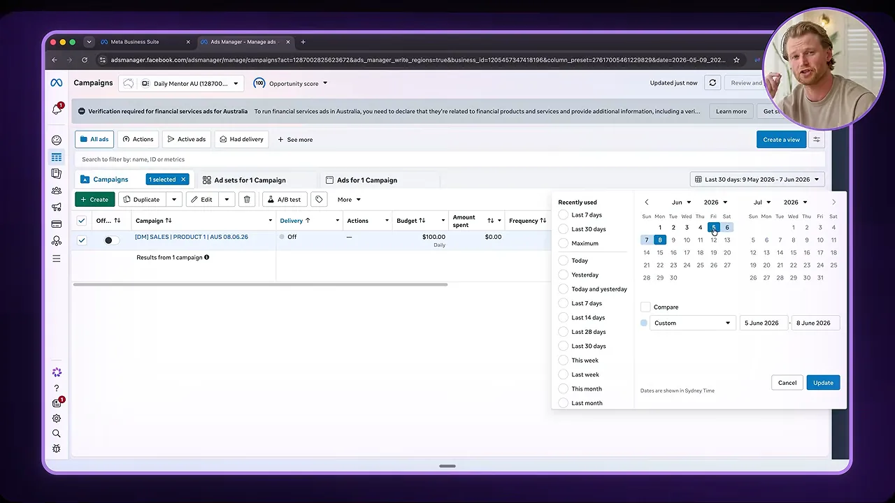
소재가 충분히 끌리는지 보는 건 그 자체로 기술이지만, 이게 쇼핑몰 운영의 90%라고 해요.
AI는 어디에 쓰나요
마지막은 AI예요. 발표자는 AI가 페이스북 광고에서 분석하기, 실제로 하기, 만들기를 도울 수 있다고 보고, 도구 네 개를 꼽아요.
| 도구 | 영상이 말한 쓰임 | 영상의 평가 |
|---|---|---|
| ChatGPT | 설정 화면을 캡처해 붙이고 질문 | 첫걸음이지만 쓸모는 제한적 |
| Triple Whale | 스토어를 연결하고 Moby 챗봇에 계정 분석을 질문 | 캡처 없이 내 계정 맥락으로 분석 |
| Manus | 랜딩 페이지를 만들어 배포, Meta 연동 | 조금 더 고급, 할 수 있는 게 많음 |
| Higgsfield | 프롬프트로 이미지를 만들고 상품을 바꿔 넣고 영상으로 | 광고 소재 만들기용으로 꼭 써 보라고 권함 |
ChatGPT: 막혔을 때 묻는 곳
앞의 과정 중 헷갈리는 화면이 있으면 캡처해 ChatGPT에 붙이고 '전문 페이스북 마케터라고 생각해 줘'라고 한 뒤 물어보래요. 아래 화면처럼 입력창에 캡처 이미지와 그 문장이 들어가 있어요.
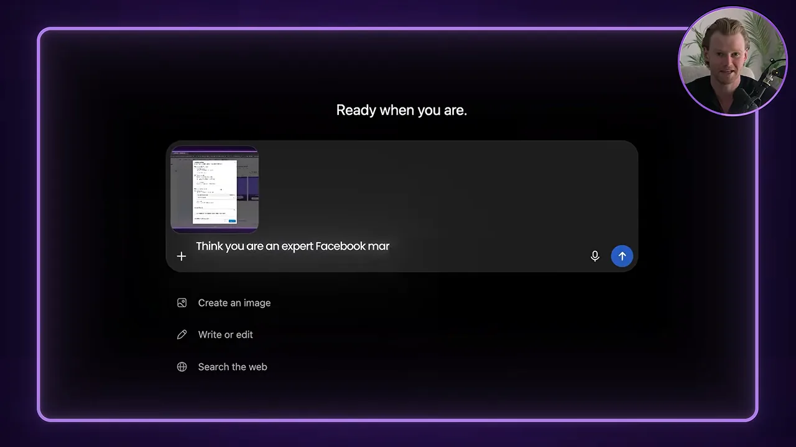
Triple Whale과 Manus: 계정에 직접 붙어요
두 도구는 성격은 다르지만 광고 계정에 직접 연결돼 캡처 없이 분석한다는 점이 같아요. Triple Whale은 앱 스토어에서 받아 스토어를 동기화하면 Moby라는 챗봇이 사업과 광고 계정을 알고 답해요. 아래 화면 왼쪽은 '최근 30일 ROAS 상위 5개 광고의 반복되는 소재 패턴을 후킹 유형, 형식, 메시지 각도, 시각 구조별로 정리해 달라'는 질문이고, 오른쪽에 광고별 지출·매출·ROAS 표와 소재 갤러리가 나와요.
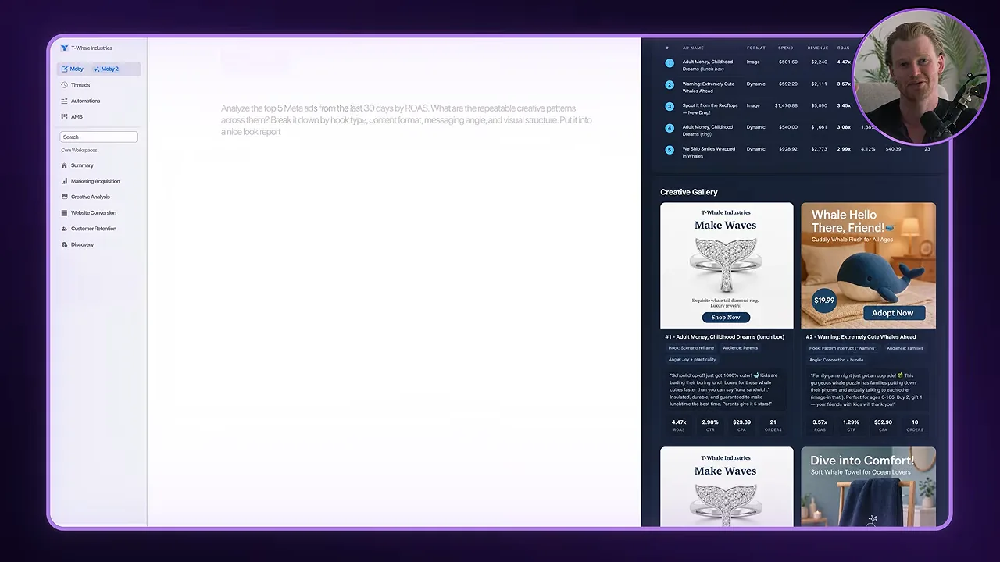
Manus는 스스로 설정하지 않으면 Shopify 데이터까지 한곳에 모이지 않아서 조금 더 고급이라고 해요. 대신 랜딩 페이지를 만들어 배포하는 등 Codex나 Claude가 하는 일을 대부분 할 수 있고, Meta 연동이 강하대요. 아래 Plugins 화면의 Connectors 목록에 Gmail, GitHub, Instagram과 함께 'Meta Ads Manager'가 보여요.
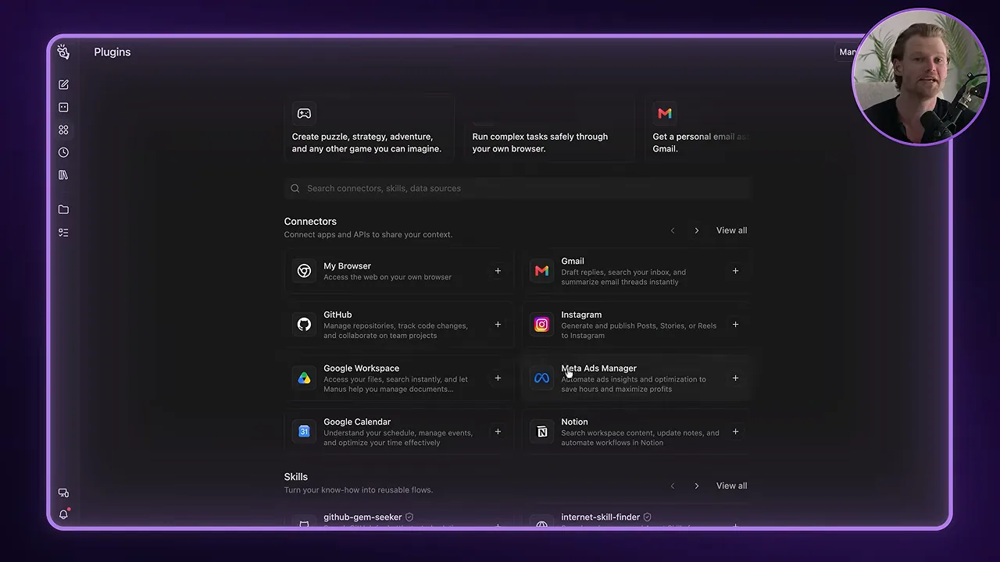
Higgsfield: 소재를 만들어요
만들기 쪽으로는 Higgsfield를 꼭 써 보라고 해요. 프롬프트로 아무 이미지나 만든 뒤, 일부를 칠해서 내 상품으로 바꾸고, 영상으로까지 만들어 페이스북 광고로 돌릴 수 있어요. 아래 화면은 프롬프트로 만든 침대 위 사진에서 슬리퍼 부분을 연두색 슬리퍼로 바꾼 결과예요. 오른쪽 위에는 넣어 둔 상품 사진이 보여요.
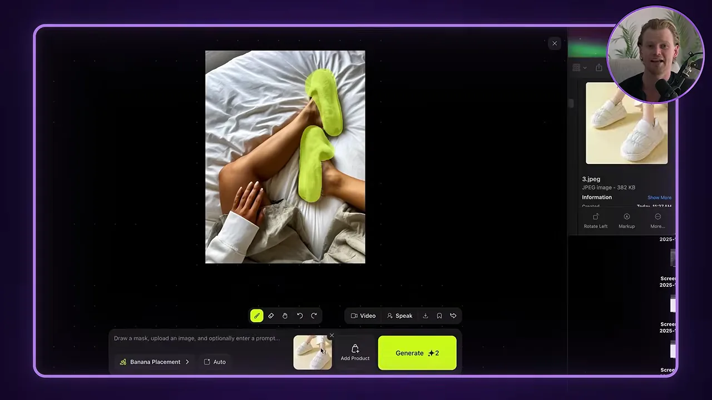